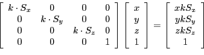

Next: Rastering pipeline Up: Hardware Design Previous: Object Pipeline
The computation pipeline consumes edges generated by the object pipeline, and monitors edge_count for new edges to operate on. It maintains its own counter, edge_iterator, which it uses to fetch the edge from the edge list and to save the computed edge into its own memory.
Unfortunately, there were not enough multipliers on the DE2 to have two concurrent 4x4 matrix multiplies for 18-bit wide operands6. Thus, the individual types of transformations were implemented which would operate on a intermediate register file store the 4x1 vector of points. Although this used fewer multipliers, the computation time for each edge was linear compared to the number of transformations instead of being a single 4x4 collapsed transformation matrix multiply.
The computation pipeline would fetch the operation control word for every cycle, select the proper hardware, and save the results back to the intermediate register. Each transformation could take up to three 16-bit arguments. Also, in order to support parametrized transformations, a scaling multiplier would operate on each of the three 16-bit arguments before reaching the transformation hardware. The three transformations currently supported are scaling, translation, and rotation on x, y, z axises. Their general types are represented below:

In all, the five transformation modules use 10.57 18-bit multipliers for two points (one edge), compared with the 17.5 18-bit multipliers if 4x4 matrix multiplies were employed. Since we transform an edge at a time, we use 21 of the 35 18-bit multipliers on the FPGA.
The computation pipeline also addresses operations that could take more than one cycle, and if the transformation module does not assert the done signal in one cycle, the pipeline will stall before proceeding to load the next operation.
Once it completes all the operations for each data set (the two points), the pipeline saves the results from the temporary registers into the second memory bank, and increments comp_count.
2007-12-02